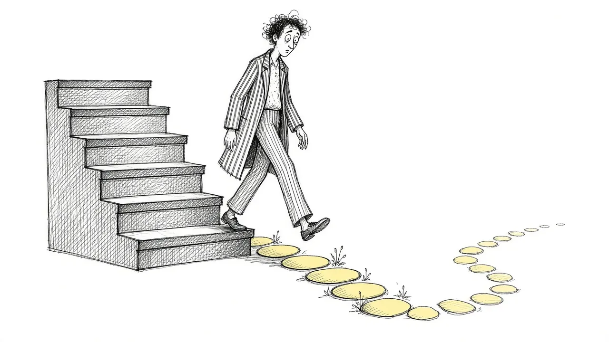

Beyond the Five Stages: How Acceptance Changes the Way We Grieve

Many people grieving today still measure themselves against the five stages: denial, anger, bargaining, depression, acceptance. When their grief does not follow the order, they wonder if they are doing it wrong. They are not.
Where the stages came from
The stages were described by Elisabeth Kubler-Ross in 1969, based on her work with terminally ill patients. They described people facing their own deaths, not the bereaved, and were never meant as a fixed sequence.
Why the stages can mislead
Treating grief as a series of stages to complete suggests there is an end point and a right order. Real grief loops, overlaps, and includes feelings like guilt, relief, and longing that are not on the list.
Acceptance as a skill, not a stage
Acceptance-based approaches in psychology treat acceptance not as the final step but as something you practice every day. It means allowing what is, including painful thoughts and feelings, so you can focus your energy on what matters.
What acceptance looks like
- Acknowledging the death is real, even when it feels impossible
- Allowing feelings rather than waiting for them to stop
- Holding grief and daily life side by side
- Choosing actions that reflect your values
Acceptance is not approval
Accepting the loss does not mean you are okay with it or that it was fair. It simply means you stop fighting the reality so you can live alongside it.
A more forgiving frame
Instead of asking what stage you are in, ask: what am I feeling today, and what do I need? That question has no wrong answer. If what you need is urgent help, call or text 988.
This article is for general information and support. It is not medical or mental health advice. If grief has become unbearable or you are thinking about harming yourself, call or text 988 right now.
Related reading

Acceptance and Remembrance: Two Ideas That Shape Healthy Grief
How acceptance and remembrance work together to help people carry grief while staying connected to the person they lost.

Coping With Grief: A Practical Guide
Practical, everyday ways to cope with grief, from the first days through the months and years that follow.

Self-Compassion in Grief
Grieving people are often harsh with themselves. How self-compassion can ease guilt and help you carry loss.